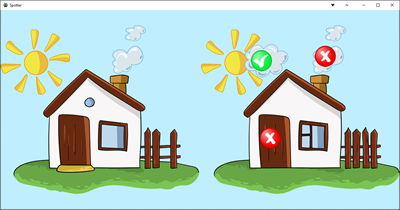

Tutorials for 2D games projects
New components introduced
| Collection - how to organise different scenes of the game world such as levels and menu screens. | |
| Collection Proxy - how to dynamically load and unload collections to switch between game worlds. | |
| Gui - how to make interfaces. | |
| Gui Script - how to script interfaces. | |
| Project - how to change the game settings. |
Spotter | Step-by-step tutorial

A classic puzzle and popular game in pub gaming machines, can you spot all the differences between two images without making too many mistakes?
In this tutorial we introduce multiple collections to demonstrate how to build simple user interfaces and multiple levels into your game. This tutorial assumes you already have a knowledge of building games in Defold including input bindings, game objects and scripts. If not, you should attempt the previous tutorials first.
- Stage 1: building the skeletal structure of the game:
- Stage 2: creating a GUI for the title screen:
- Stage 3: creating the spot the difference picture and where the differences are located.
- Stage 4: creating the player interaction;
- Stage 5: adding some 'snap'.
- Stage 6: adding some 'crackle'.
- Stage 7: adding some 'pop'.
What you learned in this tutorial
- The game settings are stored in a file named game.project. You can change many settings including the default bootstrap collection and display size.
- Collections organise objects that are related to each other together. Typically a collection would be one level of the game, a title screen or menu screen. The screens that the player sees, and therefore the collections are also known as, "game worlds".
- It is easier to build a game with multiple collections by using the main.collection file as a controller. It is not a game world that the player ever sees, it is responsible for loading and unloading all the other game worlds.
- Collection proxies are used to load and unload collections dynamically. Typically they are used to switch between menus and levels.
- Interfaces on game worlds that a user can interact with, such as pressing a button to start the game or choose a level to play are built using Gui (graphical user interface) components.
- A Gui belongs to a game object in a collection. The game object hosting the Gui serves no other purpose, but everything in Defold is built with game objects. A Gui has several components. Nodes, which are usually buttons, textures which are the graphics for the buttons, fonts and a Gui script.
- A Gui is coded using a Gui Script instead of a regular script because it has access to a different set of functions. For example, detecting if the user has clicked a node without using key triggers and collision objects.
 Craig'n'Dave | Version 1.3
Craig'n'Dave | Version 1.3